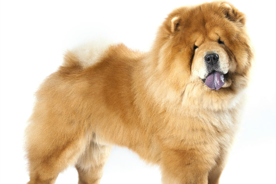

| דף ראשי | גזעים | מחלות | רקעים ותמונות | סקר | צרו קשר |
|---|
| קוקר ספאנייל |
| סמוייד |
| שפיץ יפני |
| פומרניאן |
| פודל |
| דני ענק |
| דלמטי |
| רועה גרמני |
| רועה קווקזי |
| רועה בלגי |
| בולדוג אמריקאי |
| בולדוג צרפתי |
| בולדוג אנגלי |
| צ'או צ'או |
| שיצ'ו |
| אמסטף |
| פינצ'ר |
| רוטווילר |
| דוברמן |
| האסקי סיבירי |
צ'או צ'או
מידע נוסף
צ'או צ'או הוא גזע הכלבים הקדום ביותר. בדיקות DNA מצביעות על כך שהצ'או צ'או הוא אחד התולדות הראשונות של הזאב. הצ'או צ'או של היום שונה מהגזע הקדום, אבל חלק מהתכונות נשארו עם הצ'או צ'או. צ'או צ'או הוא אחד הכלבים המרשימים שחיים בקרבנו. ממבט ראשון הצ'או צ'או נראה כמו אריה קטן, ובסין שלא היו בה אריות, הצ'או צ'או היה האריה הסיני ביחד עם הפקינז.
צ'או צ'או - מקור הגזע והיסטוריה
אין וודאות לגבי מקורו של הצ'או צ'או,למרות שהגזע רשמית נקשר לסין. חלק מהחוקרים מדברים על מונגוליה וחלקם מצביעים על אזורים בסין. הצ'או צ'או הוא כלב ציד במקור. תפקידו העיקרי היה כלב שמירה של הנזירים באזור סין והודו. במנזר היה תפקידו לשמור על אריות שגידלו הנזירים. שמו צ'או צ'או מגיע מהשפה סינית והפירוש הוא כלב אריות נעים. הצ'או צ'או הוא חלק מקבוצת גזעי כלבים מסין העתיקה שהיו קשורים לגזע כלבים שהנזירים השתמשו בו לשמירה על אריות. הצ'או צ'או הוא סמל לכוח ולעוצמה בסין, בגלל תכונותיו, הסינים האמינו שאכילת בשרו ושימוש במוצרים מעצמותיו או פרוותו יוביל לבריאות ולאושר.
צ'או צ'או - נתונים ומאפיינים
הצ'או צ'או הוא כלב מדהים ביופיו. פרוותו ארוכה ונעימה מאוד. צבע הפרווה אחיד ולרוב בצבעי קרם קינמון או כחול אדום וחום . עיניו שקועות ואוזניו קטנות מאוד.
מבנה גופו שרירי ומוצק וזנבו קצר ומסולסל. סימן ההיכר של הצ'או צ'או - פה ולשון בצבע שחור.
משקל:22-30
גובה: 45-52 ס"מ
מחלות נפוצות וטיפול
צ'או צ'או סובל מבעיות שקשורות למפרקים ועצמות. הצ'או צ'או סובל מבעיות בעיניים ולפעמים מצריך ניתוח בעפעפיים. בנוסף קיימות כמה מחלות גנטיות שמהם סובלים הצ'או צ'או. בשעת הטיול צריך לבדוק אם לצ'או צ'או ישנם כאבים במפרקים או בעיות בעיניים. גילוי מוקדם ימנע הסתבכות מיותרת.
